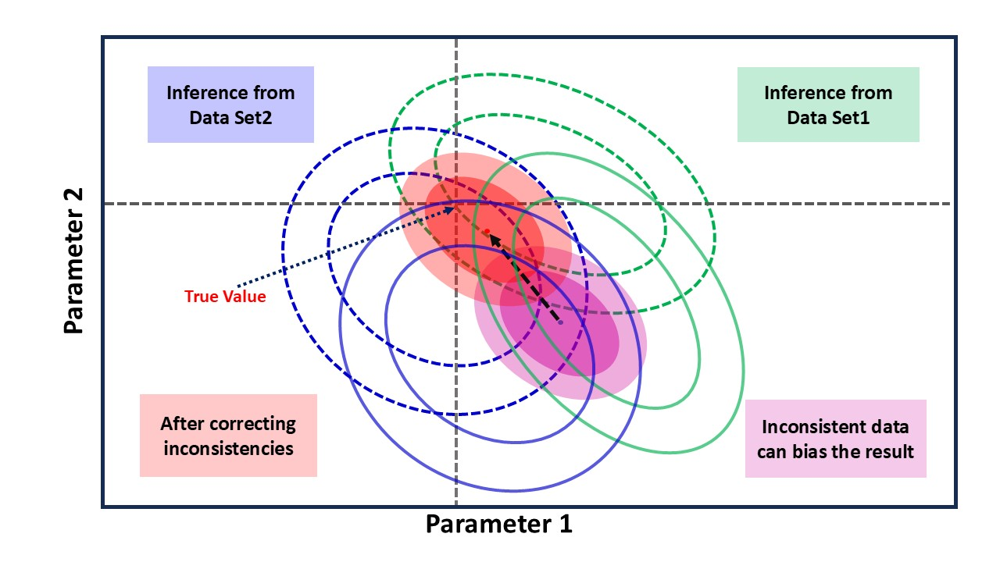
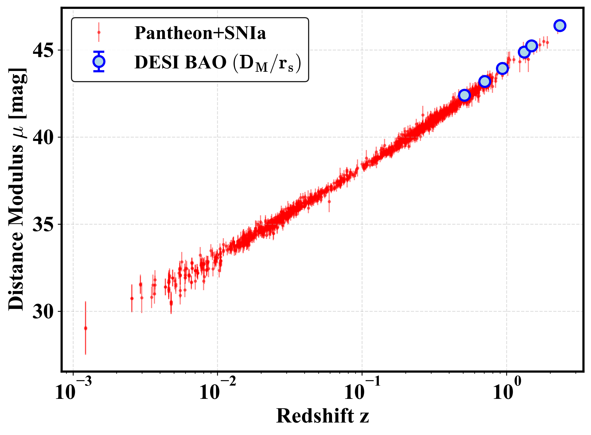
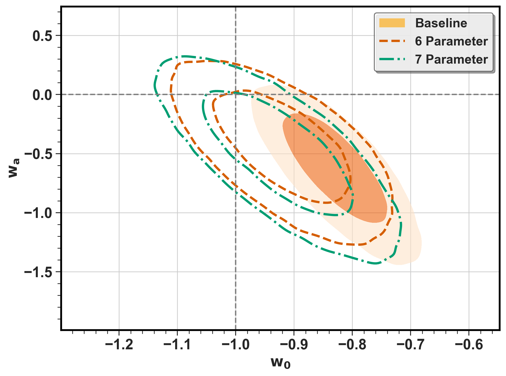
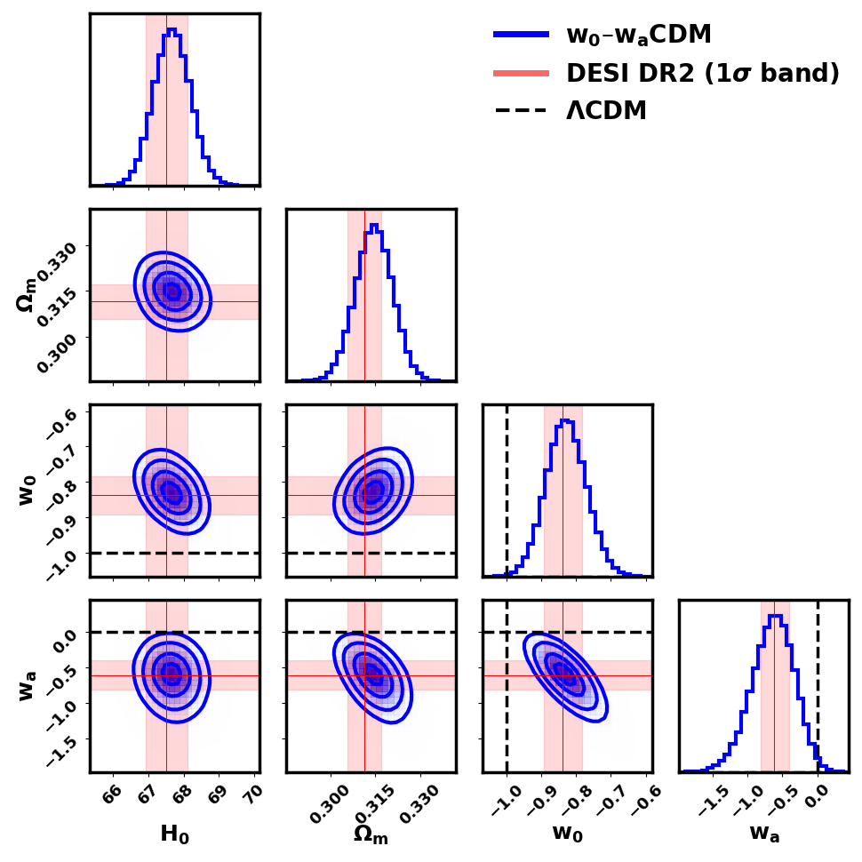
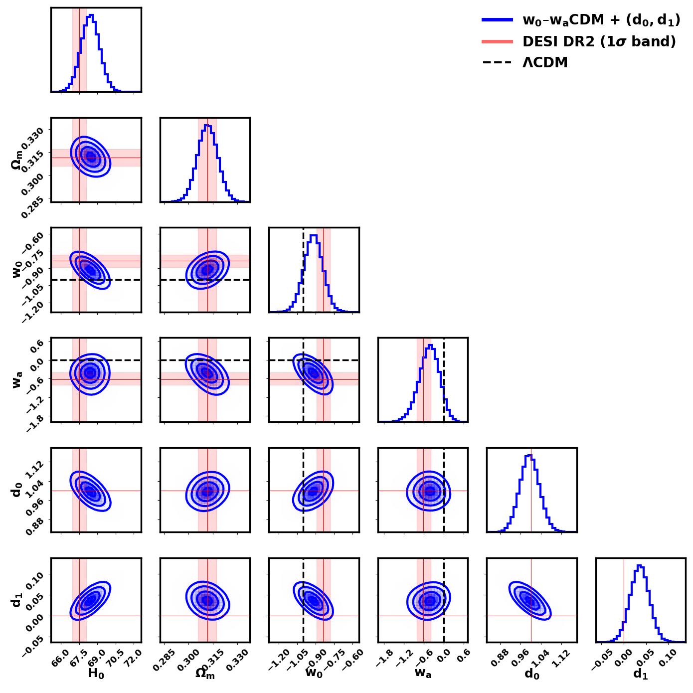
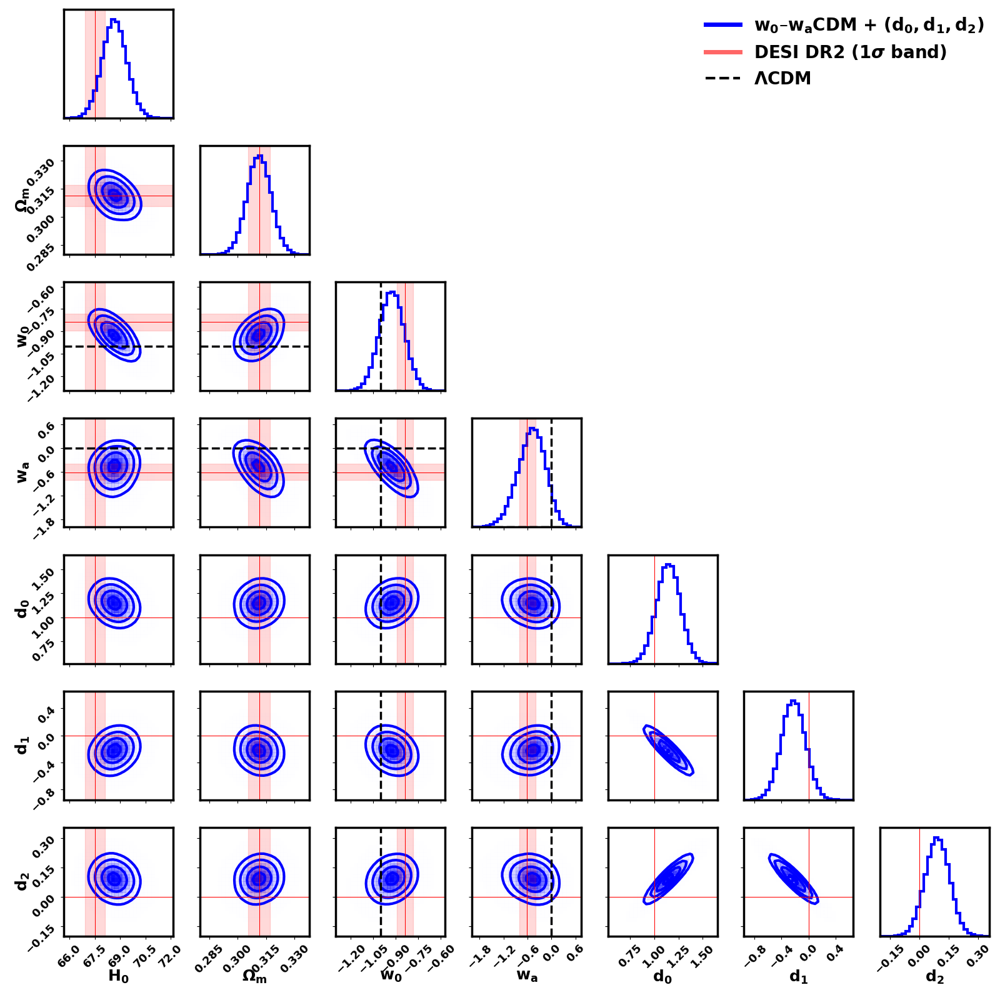
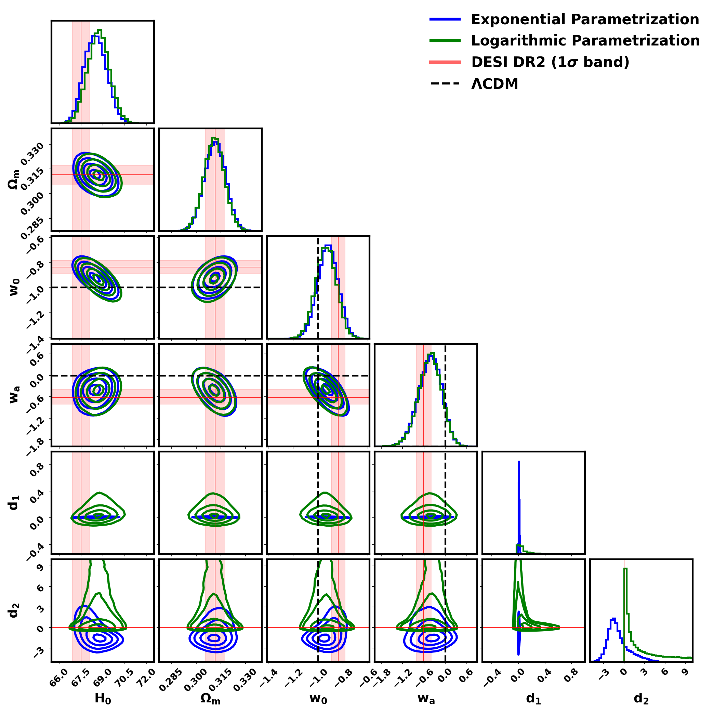
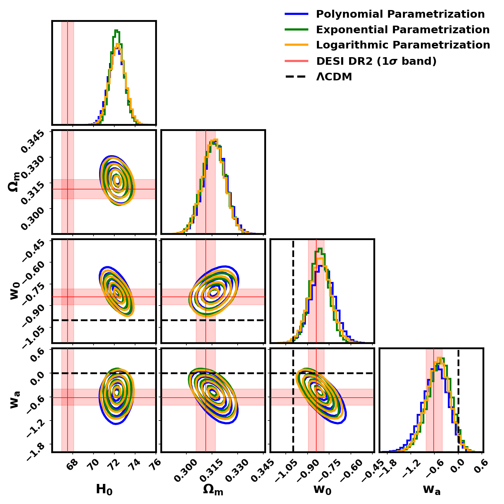

01 — The claimPrecise is not the same as accurate
The Dark Energy Spectroscopic Instrument (DESI) maps millions of galaxies and quasars and measures baryon acoustic oscillations (BAO), a fixed ruler imprinted in the clustering of matter. Combined with the distances to type Ia supernovae (SNIa) from Pantheon+, Union or DES-Y5, the second data release (DR2) was reported to favour a dark energy whose strength changes with time, and to disfavour a simple cosmological constant at 2.8 to 4.2σ.
Combining datasets is a powerful way to sharpen a measurement, but only if the datasets are consistent with one another. If each carries its own hidden systematic error, the combination can be very precise and still wrong: two slightly shifted results pull the joint answer away from the truth while making the error bars look small. So before trusting the evidence for evolving dark energy, we asked a more basic question: do DESI and the supernovae actually agree?

02 — The consistency testThe cosmic distance duality relation
Supernovae and BAO measure distance in two different ways. A supernova is a standard candle: from how faint it looks we get its luminosity distance. BAO is a standard ruler: from how large the ruler appears on the sky we get the angular diameter distance. A result known as Etherington's reciprocity theorem says that, as long as photons travel freely and are not lost on the way, these two distances are locked together at every redshift, for any expansion history and any model of dark energy:
This makes it a clean, model-independent test of the data, not of the theory. If supernova and BAO distances at the same redshift break this relation, at least one dataset contains an unaccounted effect, either an observational systematic or genuinely new physics. We let the data decide by allowing a smooth, redshift-dependent mismatch between the two distances, described by a few free coefficients: an overall offset (as from a calibration difference) and terms that let the mismatch grow with redshift (as from evolving supernova properties or a calibration drift). If the datasets agree perfectly, all of these vanish.
03 — The dataTwo rulers on one scale
We used DESI DR2's transverse BAO measurement, which gives the angular size of the BAO ruler at several redshifts, together with the Pantheon+ compilation of 1701 supernovae spanning redshifts from nearly zero out to 2.26. To turn the BAO ruler into a physical distance we used the sound horizon measured by Planck, rd = 147.09 Mpc, exactly as in the published DESI analysis, so that our results can be compared directly.
Converting both datasets to the same distance scale shows how they overlap: the supernovae cover the nearby Universe densely, while DESI anchors the distance scale at higher redshift. It is in this overlap region that a small, redshift-dependent disagreement can hide, and it is exactly this disagreement that the distance duality test is built to catch.

04 — Letting the data disagreeThree fits, one trend
We fitted a flat universe with evolving dark energy, described by the usual CPL parameters w0 (dark energy today) and wa (how it changes with time), to DESI DR2 and Pantheon+ together, using a Planck prior on the matter density. We did this three times, each time giving the data a little more freedom to disagree:
- Baseline: the standard analysis with no mismatch allowed. This reproduces the published DESI DR2 result.
- 6-parameter fit: adds an overall offset and a mismatch that grows linearly with redshift.
- 7-parameter fit: also allows the mismatch to curve with redshift.
The pattern is clear. As soon as the datasets are allowed to disagree, the dark energy constraints widen and move towards the cosmological constant, w0 = −1 and wa = 0.

05 — Why the answer shiftsA mismatch that looks like evolving dark energy
The full results show why this happens. The coefficients describing the supernova–BAO mismatch are strongly correlated with the dark energy parameters. A small, redshift-dependent disagreement between the two datasets can therefore be absorbed into w0 and wa, and it then looks exactly like dark energy that evolves with time. None of the mismatch coefficients is individually far from zero, but their roughly 1σ shifts all point the same way, towards a redshift-dependent contamination.



06 — ResultsThe numbers
All three fits agree on the matter density. Allowing the datasets to disagree moves w0 by about one standard deviation towards −1 and wa towards zero. The support for a cosmological constant, measured by the Bayes factor at the point (−1, 0), grows about twentyfold, from 2.5 in the baseline to 54 and 49 in the extended fits.
Dark energy parameters in each fit
| Model | H0 | Ωm | w0 | wa | d0 | d1 | d2 | χ²ν | BF |
|---|---|---|---|---|---|---|---|---|---|
| w0waCDM | 67.67 ± 0.51 | 0.31 ± 0.01 | −0.83 ± 0.06 | −0.62+0.29−0.32 | – | – | – | 1.04 | 2.47 |
| + (d0, d1) | 68.43 ± 0.76 | 0.31 ± 0.01 | −0.92 ± 0.08 | −0.44+0.29−0.32 | 1.00 ± 0.04 | 0.04 ± 0.02 | – | 0.68 | 54.14 |
| + (d0, d1, d2) | 68.66+0.73−0.72 | 0.31 ± 0.01 | −0.92 ± 0.08 | −0.49+0.33−0.36 | 1.15 ± 0.12 | −0.22+0.18−0.17 | 0.09 ± 0.06 | 1.06 | 49.47 |
H0 in km s−1 Mpc−1. BF = Bayes factor, from the Savage–Dickey density ratio at (w0, wa) = (−1, 0), with identical uniform priors w0 ∈ [−2, 1], wa ∈ [−3, 3] in every fit. χ²ν is evaluated at the best fit.
07 — RobustnessNot an artefact of our choices
A fair worry is that the result depends on how we described the mismatch, or on the value of the sound horizon we assumed. We tested both. First, we replaced our polynomial description with two very different shapes, a logarithmic and an exponential one. Second, we repeated the whole analysis with an alternative sound horizon, rd = 136.4 Mpc.
Changing the sound horizon mainly rescales the Hubble constant, as expected, and leaves the matter density almost unchanged. The details of the contours shift, but the conclusion does not: in every case, allowing the datasets to disagree moves dark energy towards a cosmological constant.


08 — What it meansSystematics, or new physics?
A mismatch between supernova and BAO distances has two possible kinds of explanation, and they predict different things.
Supernova systematics
The average properties of supernova progenitors, such as their metallicity or age, may drift slightly with redshift. Grey dust, calibration differences between the many low- and high-redshift surveys, or small errors in selection-bias corrections could all leave a smooth, redshift-dependent offset of just a few hundredths of a magnitude.
BAO and CMB systematics
BAO measurements depend on modelling of galaxy clustering and on the sound horizon, which is inferred from early-Universe physics. Errors there would rescale the BAO distances, although in practice BAO and CMB results agree well with each other.
New physics
Photons converting into axion-like particles, absorption by a dark sector, or a varying speed of light would all break the distance duality relation. But such effects would dim every light source in the same way, not only supernovae.
The verdict
Since BAO and CMB agree while supernovae stand apart, the evidence favours an unaccounted supernova-specific systematic over a universal new effect. Correct for it, and DESI DR2 with Pantheon+ is consistent with a cosmological constant.
As DESI, the Rubin Observatory (LSST) and JWST make distance measurements ever more precise, consistency tests like this one should be run before datasets are combined. Otherwise small hidden systematics can masquerade as new physics.